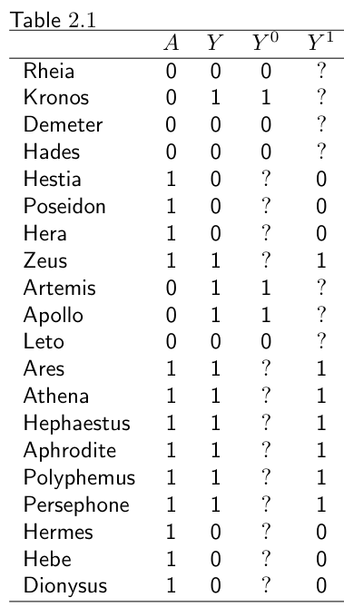
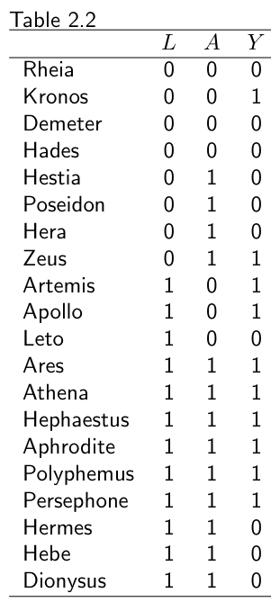
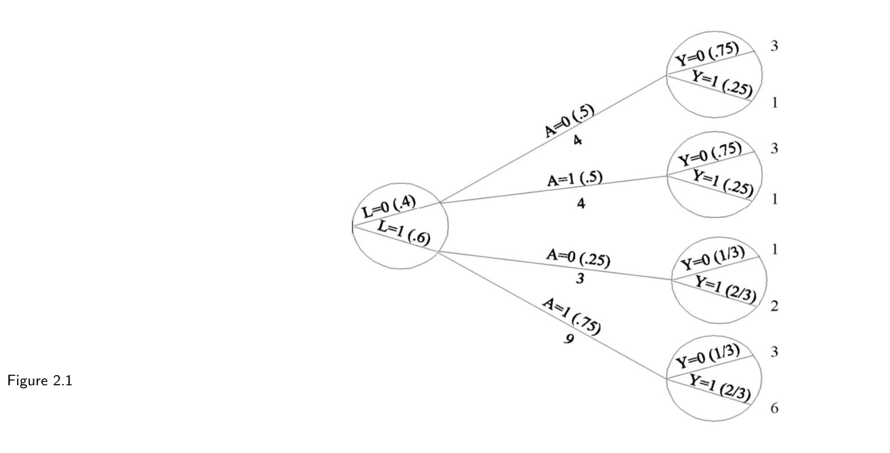
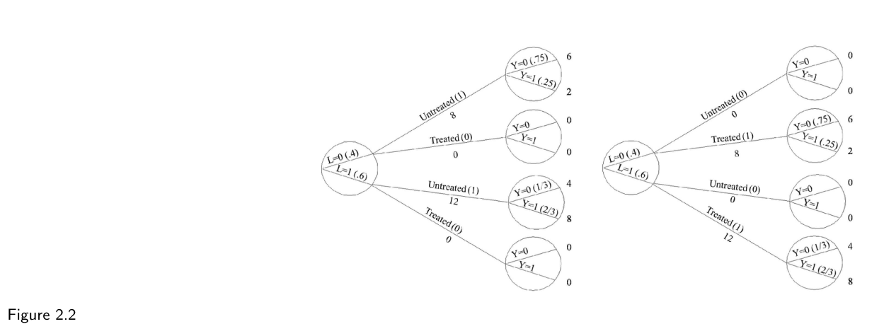
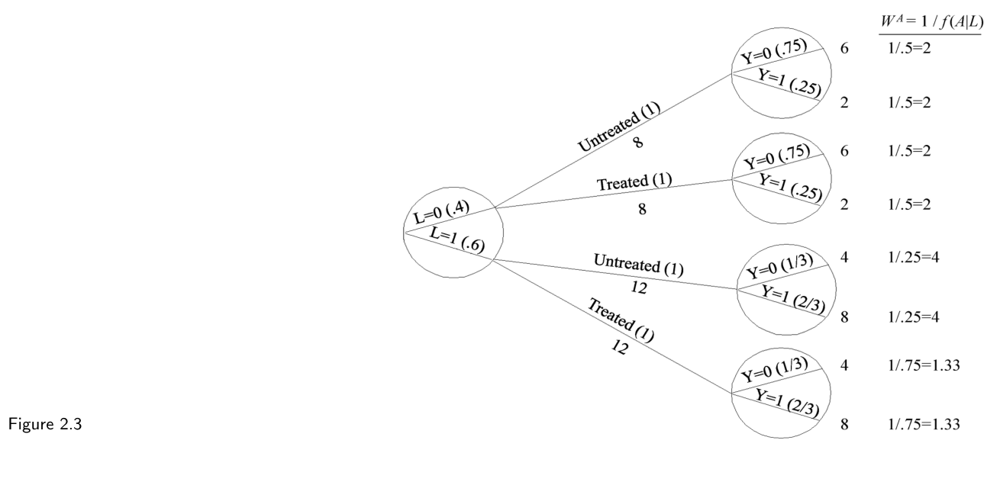

第一部分 · 无模型的因果推断 · Part I — Causal inference without models
第 2 章 · 随机化试验
Hernán MA, Robins JM（2020）. Causal Inference: What If. Chapter 2. 本页为中文全文翻译，附译注。
你抬头看天，会让其他路人也都抬头看吗？这个疑问具备任何因果问题的主要要素：我们想知道某个行动（你抬头）是否对某个结局（别人抬头）产生了影响，而影响的对象是一个特定人群（比如 2019 年住在马德里的人）。假设你接受挑战，要设计一个科学研究来回答这个问题。“这算不上什么挑战，”你想了想说，“我可以站在人行道上，每当有人走近就抛一枚硬币。正面朝上，我就抬头；反面朝上，我就直视前方。这个试验我重复几千次。如果在我抬头之后的 10 秒内抬头的行人比例，高于我没抬头时抬头的行人比例，我就下结论：我抬头这件事对别人抬头有因果效应。顺便说一句，我可能会雇个助手，在我抬头时记录人们在干什么。”做完这项研究后，你发现：你抬头时有 55% 的行人抬头，而直视前方时只有 1% 的行人抬头。 你对我们挑战的回答，就是做了一次随机化试验（randomized experiment）。说它是试验，是因为研究者（你）实施了那个让人感兴趣的举动（抬头）；说它随机化，是因为对任何研究对象（行人）是否采取行动，是由随机装置（抛硬币）决定的。并非所有试验都是随机化的。比如，你本可以规定：男人走近就抬头，女人走近就直视前方。那样，行动的分派就会遵循一条确定性的规则（男的抬头、女的直视），而不是随机机制。不过，如果你做的是非随机化试验，你的发现就没那么有说服力了。如果你的行动是由行人的性别决定的，批评者就可以说，男人和女人“抬头”的行为本来就不一样（你抬头后，女人抬头可能比男人少），于是你的研究比较的其实是“不可比”的两群人。本章要讲清楚：为什么随机化能导出令人信服的因果推断。
2.1 随机化
在真实世界里，我们既不知道 Zeus 在处理下的潜在结局 Ya=1，也不知道他在未处理下的潜在结局 Ya=0。我们所能知道的，只是他在实际分到的处理值 A 下观测到的结局 Y。表 2.1 汇总了这 20 个人口里我们掌握的信息。对每个人，两个反事实结局里只有一个是已知的：与他实际接受的处理水平相对应的那一个。另一个反事实结局的数据是缺失的。正如上一章所说，这种缺失制造了麻烦，因为我们似乎需要两个反事实结局的取值才能计算效应度量。表 2.1 的数据只够计算关联度量。
随机化试验和任何其他真实研究一样，也会产生表 2.1 那样的反事实结局缺失值。但随机化保证了这些缺失是偶然发生的。结果就是：尽管数据缺失，随机化试验里仍然能计算效应度量——更严格地说，能一致地估计它们。下面把话说得更准些。
设想图 1.1 里那颗钻石代表的人群近乎无限大，我们对其中每个人都抛一枚硬币。硬币若反面朝上，就把他分进白组；若正面朝上，就分进灰组。注意这枚硬币并不公平，因为正面朝上的概率小于 50%——最终进入灰组的人比白组少。接着我们让研究助手给白组的人实施感兴趣的处理（A = 1），给灰组的人实施安慰剂（A = 0）。五天后，研究结束时，我们算出每组中的死亡风险：Pr[Y = 1|A = 1] = 0.3，Pr[Y = 1|A = 0] = 0.6。关联风险比（risk ratio）是 0.3/0.6 = 0.5，关联风险差（risk difference）是 0.3 − 0.6 = −0.3。我们假定这在其余各方面都是一项理想的随机化试验：没有失访，研究期间完全遵守所分配的处理，处理只有单一版本，且分配是双盲的（见第 9 章）。理想随机化试验不现实，但用来引入因果推断的一些关键概念很有用。本书后面会讨论更贴近现实的随机化试验。

现在想象一下：如果研究助手误解了我们的指示，去治疗灰组而不是白组，会怎样？假设研究结束后我们才得知这个误会。处理状态的这种反转会影响结论吗？一点也不会。我们照样会得出：接受处理者（此时是灰组）Pr[Y = 1|A = 1] = 0.3，未接受处理者（此时是白组）Pr[Y = 1|A = 0] = 0.6。关联度量不会变。因为人是被随机分到白组和灰组的，所以无论白组接受治疗、灰组接受安慰剂，还是反过来，暴露者中的死亡比例 Pr[Y = 1|A = 1] 都预期相同。当组别归属是随机化的，究竟哪一组接受了处理，对 Pr[Y = 1|A = 1] 的取值无关紧要。当然，同样的道理也适用于 Pr[Y = 1|A = 0]。用术语说，我们称这两组是可交换的（exchangeable）。
可交换性指的是：若白组的人接受的是给灰组的那种处理，白组的死亡风险本该和灰组的死亡风险一样。也就是说，在处理值 a 下，接受处理者的反事实风险 Pr[Ya = 1|A = 1] 等于未接受处理者的反事实风险 Pr[Ya = 1|A = 0]，对 a = 0 和 a = 1 都成立。这些（条件）风险在按处理状态划分的所有子集中都相等，一个显然的推论是：它们必定等于整个总体在处理值 a 下的（边际）风险，即 Pr[Ya = 1|A = 1] = Pr[Ya = 1|A = 0] = Pr[Ya = 1]。因为处理值 a 下的反事实风险在 A = 1 和 A = 0 两组里都一样，我们说实际处理 A 并不预测反事实结局 Ya。等价地说，可交换性意味着反事实结局与实际处理相互独立，即对所有 a 都有 Ya ⊥⊥ A。随机化之所以备受推崇，正是因为它预期能带来可交换性。当接受处理者与未接受处理者可交换时，我们有时也说处理是外生的（exogenous），因此外生性常被当作可交换性的同义词。
上一段论证了：在可交换性成立的前提下，白组那部分人口在处理下的反事实风险，等于整个总体在处理下的反事实风险。但白组在处理下的风险根本不是反事实，因为白组实际就接受了处理！所以，我们的理想随机化试验允许我们计算总体在处理下的反事实风险 Pr[Ya=1 = 1]，因为它等于接受处理者的风险 Pr[Y = 1|A = 1] = 0.3。也就是说，接受处理者的风险（钻石的白的部分）与假设全体都接受处理时的风险相同（从而整颗钻石全是白的）。当然，同样的道理适用于未接受处理者：总体在未处理下的反事实风险 Pr[Ya=0 = 1] 等于未接受处理者的风险 Pr[Y = 1|A = 0] = 0.6。因果风险比是 0.5，因果风险差是 −0.3。在理想随机化试验里，关联即因果。
再换一种方式解释随机化试验里的可交换性 Ya ⊥⊥ A。反事实结局 Ya 和化学属性很像，可以想成是一个人身上、在处理 A 被随机分派之前就已经存在的固定特征。这是因为 Ya 编码的是“如果被分到处理 a 会发生什么结局”，因此不依赖于你后来实际接受的处理。既然处理 A 是随机化的，它就既独立于你的基因，也独立于 Ya。Ya 与基因的区别在于：即便在概念上，你也只能在给药之后、且只有在自己的处理 A 恰好等于 a 时，才能知道 Ya 的取值。
我们的心脏移植研究（表 2.1）里可交换性成立吗？要回答，就得检查对 a = 0 和 a = 1 是否都有 Ya ⊥⊥ A。先取 a = 0。假设表 1.1 的反事实数据我们能拿到。那就可以算：在接受处理者中，未处理下的死亡风险 Pr[Ya=0 = 1|A = 1] = 7/13；在未接受处理者中，Pr[Ya=0 = 1|A = 0] = 3/7。既然未处理下的死亡风险在两组间是接受处理者更高（7/13 > 3/7），我们就得出结论：接受处理者的预后比未接受处理者差，也就是说，两组不可交换。从数学上说，我们证明了可交换性 Ya ⊥⊥ A 对 a = 0 不成立（你可以自己验证它对 a = 1 也不成立）。因此，本节开头那个问题的答案是“否”。
但请注意：真实世界里能拿到的只有表 2.1 的观测数据，而不是表 1.1 的反事实数据。既然表 2.1 不足以计算像“接受处理者未处理下的风险”Pr[Ya=0 = 1|A = 1] 这样的反事实风险，我们一般无法确定研究里可交换性是否成立。不过，假如我们能拿到表 1.1，并据此判定心脏移植研究里可交换性不成立，那能就此断定这项研究不是随机化试验吗？不能，有两个理由。第一，你可能已经想到：一个二十人的研究太小，得不出确切结论。抽样变异带来的随机波动几乎能解释任何事。随机变异我们留到第 10 章再谈。在那之前，先假设总体里每个人代表 10 亿个与他完全相同的人。第二，即便在无限样本里可交换性不成立，研究仍可能是随机化试验。只是它不会是本节描述的那种随机化试验，而会是研究者动用不止一枚硬币来随机分派处理的一种随机化试验。下一节就讲用不止一枚硬币的随机化试验。
2.2 条件随机化
表 2.2 给出我们心脏移植随机研究的数据。除了处理 A（个体接受移植为 1，否则为 0）和结局 Y（个体死亡为 1，否则为 0），表 2.2 还含有预后因素 L（个体处于危重状态为 1，否则为 0）的数据，它是在分派处理前测得的。我们现在考虑两个互斥的研究设计，并讨论表 2.2 的数据是否可能来自其中任何一个。

在设计 1 下，我们会从总体中随机选出 65% 的人，给每个被选中的人移植一颗新心脏。这能解释为什么 20 人里有 13 人接受了处理。在设计 2 下，我们会先把所有人分成危重（L = 1）和非危重（L = 0）两类，再随机选出危重者中的 75% 和非危重者中的 50%，分别给他们移植新心脏。这能解释为什么危重者 12 人里 9 人、非危重者 8 人里 4 人接受了处理。
两种设计都是随机化试验。设计 1 正是 2.1 节那种随机化试验：用一个硬币给所有人分派处理（比如反面朝上就治疗，正面朝上就不治疗），一枚加重的硬币，反面朝上概率为 0.65，于是 65% 的人接受治疗。设计 2 则不会对所有人都用同一枚硬币，而是对危重者用一枚反面概率 0.75 的硬币，对非危重者用一枚反面概率 0.50 的硬币。我们把设计 2 这样的试验称为条件随机化试验（conditionally randomized experiments），因为我们用了几个依赖于（即以之为条件）变量 L 取值的随机化概率。设计 1 则称为边际随机化试验（marginally randomized experiments），因为我们用了单一的无条件（边际）随机化概率，对所有人一视同仁。
如前所述，边际随机化试验预期会带来接受处理者与未接受处理者的可交换性：
Pr[Ya = 1|A = 1] = Pr[Ya = 1|A = 0] 即 Ya ⊥⊥ A（对所有 a）
相比之下，条件随机化试验一般不会带来两组的可交换性，因为按设计，每组里预后差的人占比可能不同。因此，表 2.2 的数据不可能来自边际随机化试验，因为接受处理者中 69% 为危重，而未接受处理者中只有 43% 为危重。这种失衡意味着：若未接受处理，接受处理者的死亡风险本该高于未接受处理者。也就是说，处理 A 预测了无处理下的反事实死亡风险，可交换性 Ya ⊥⊥ A 不成立。既然我们的研究是随机化试验，你就可以放心地断定：这项研究是随机化、且随机化以 L 为条件的试验。
我们的条件随机化试验，其实就是两个独立的边际随机化试验拼在一起：一个在危重者子集（L = 1）里做，另一个在非危重者子集（L = 0）里做。先考虑在危重者子集里做的那个随机化试验。在这个子集里，接受处理者与未接受处理者可交换。形式化地说，在分派处理时他们都在危重状态的前提下，每个处理值 a 下的反事实死亡风险在接受与未接受处理者中相同，即
Pr[Ya = 1|A = 1, L = 1] = Pr[Ya = 1|A = 0, L = 1] 即 Ya ⊥⊥ A | L = 1（对所有 a）
其中 Ya ⊥⊥ A|L = 1 表示给定 L = 1 时 Ya 与 A 独立。类似地，随机化也保证了在非危重者子集里两组可交换，即 Ya ⊥⊥ A|L = 0。当对 L 的所有取值 l 都有 Ya ⊥⊥ A|L = l 时，我们简写为
条件可交换性：Ya ⊥⊥ A | L（对所有 a）
因此，条件随机化虽然不能保证无条件（或边际）可交换性 Ya ⊥⊥ A，却保证了变量 L 各水平内的条件可交换性 Ya ⊥⊥ A|L。小结一下：随机化要么产生边际可交换性（设计 1），要么产生条件可交换性（设计 2）。
我们已经知道如何在边际可交换性下计算效应度量。在边际随机化试验里，因果风险比 Pr[Ya=1 = 1] / Pr[Ya=0 = 1] 等于关联风险比 Pr[Y = 1|A = 1] / Pr[Y = 1|A = 0]，因为可交换性保证了处理水平 a 下的反事实风险 Pr[Ya = 1] 等于实际接受该处理水平者的观测风险 Pr[Y = 1|A = a]。因此，如果表 2.2 的数据来自边际随机化试验，因果风险比就能直接从 A 和 Y 的数据算出：(7/13)/(3/7) = 1.26。问题是：在条件随机化试验里怎么算因果风险比？记住，条件随机化试验不过是分别在不同子集 L = 1 和 L = 0 里做的两个（或更多）边际随机化试验拼起来。于是我们有两种选择。
第一，我们可以在每个子集或层（stratum）里计算平均因果效应。因为层内关联即因果，危重者（L = 1）中层的因果风险比 Pr[Ya=1 = 1|L = 1] / Pr[Ya=0 = 1|L = 1] 等于层内关联风险比 Pr[Y = 1|L = 1, A = 1] / Pr[Y = 1|L = 1, A = 0]；L = 0 时同理。我们把这种计算层特异因果效应的方法称为分层（stratification）。注意，L = 1 子集里的层特异因果风险比，可能不同于 L = 0 里的那个。若如此，我们就说处理的效应被 L 修饰了（modified），或者说存在由 L 造成的效应修饰（effect modification），或者说效应在 L 的各水平间存在异质性（heterogeneity）。分层与效应修饰会在第 4 章详谈。
第二，我们可以像此前那样，计算整个总体中的平均因果效应 Pr[Ya=1 = 1] / Pr[Ya=0 = 1]。我们首要关心的是层特异平均因果效应，还是整个总体的平均因果效应，取决于第 4 章和第三部分会详细讨论的实用与理论考量。举个例子：如果你不指望未来个体身上会有 L 的信息（比如 L 测量昂贵），那么你的治疗决策就无法依赖 L 的取值，这时你可能会更关心整个总体的平均因果效应，而非层特异的。在第 4 章之前，我们只关注整个总体的平均因果效应。接下来两节讲如何用条件随机化试验的数据，去计算整个总体的平均因果效应。关于风险时期的讨论见精细辨析 2.2。
2.3 标准化
我们的心脏移植研究是一项条件随机化试验：研究者用随机程序，对非危重者（L = 0，共 8 人）以 50% 的概率分配心脏（A = 1），对危重者（L = 1，共 12 人）以 75% 的概率分配。先聚焦那 8 个非危重者——记住，他们其实是 80 亿人的平均代表。这组里，接受处理者的死亡风险是 Pr[Y = 1|L = 0, A = 1] = 1/4，未接受处理者的是 Pr[Y = 1|L = 0, A = 0] = 1/4。因为处理是随机分派给 L = 0 这组人的，即 Ya ⊥⊥ A|L = 0，观测风险就等于反事实风险。也就是说，在 L = 0 组里，接受处理者的风险等于假设全体都接受处理时的风险：Pr[Y = 1|L = 0, A = 1] = Pr[Ya=1 = 1|L = 0]；未接受处理者的风险等于假设全体都不接受处理时的风险：Pr[Y = 1|L = 0, A = 0] = Pr[Ya=0 = 1|L = 0]。同理可推：在那 12 个危重者中，观测风险也等于反事实风险，即 Pr[Y = 1|L = 1, A = 1] = Pr[Ya=1 = 1|L = 1] = 2/3，Pr[Y = 1|L = 1, A = 0] = Pr[Ya=0 = 1|L = 1] = 2/3。
现在假设我们的目标，是计算因果风险比 Pr[Ya=1 = 1] / Pr[Ya=0 = 1]。因果风险比的分子是“若总体 20 人都接受处理”的风险。由上一段我们知道：若全体接受处理，在 8 个 L = 0 的人里风险是 1/4，在 12 个 L = 1 的人里风险是 2/3。因此，若总体 20 人都接受处理，风险将是 1/4 和 2/3 的加权平均，每组权重与其人数成正比。既然 40% 的人（8 个）在 L = 0 组、60% 的人（12 个）在 L = 1 组，加权平均就是 (1/4)×0.4 + (2/3)×0.6 = 0.5。于是若全体接受处理，风险 Pr[Ya=1 = 1] = 0.5。同理可算：若无人接受处理，风险 Pr[Ya=0 = 1] 也等于 0.5。因果风险比便是 0.5/0.5 = 1。
更形式化地说，边际反事实风险 Pr[Ya = 1] 是层特异风险 Pr[Ya = 1|L = 0] 与 Pr[Ya = 1|L = 1] 的加权平均，权重分别是总体中 L = 0 和 L = 1 个体的比例。即 Pr[Ya = 1] = Pr[Ya = 1|L = 0]·Pr[L = 0] + Pr[Ya = 1|L = 1]·Pr[L = 1]。用更紧凑的记号：Pr[Ya = 1] = Σl Pr[Ya = 1|L = l]·Pr[L = l]，其中 Σl 表示对总体中出现的全部 l 求和。在条件可交换性下，我们可以把上式里的反事实风险 Pr[Ya = 1|L = l] 替换成观测风险 Pr[Y = 1|L = l, A = a]。即 Pr[Ya = 1] = Σl Pr[Y = 1|L = l, A = a]·Pr[L = l]。等式左边是观测不到的反事实风险，右边却只含可观测量，可以用 L、A、Y 的数据算出来。当一个反事实量能表示成观测数据分布（即那些概率）的函数时，我们就说这个反事实量被识别（identified）了；否则就说它未被识别。
这个方法在流行病学、人口学和其他学科里被称为标准化（standardization）。例如，因果风险比的分子 Σl Pr[Y = 1|L = l, A = 1]·Pr[L = l] 就是“以总体为标准（standard）”的处理组标准化风险。在条件可交换性下，这个标准化风险可以解释为：若总体中每个人都接受处理，本该观测到的（反事实）风险。
处理组与未处理组的标准化风险，分别等于处理下与无处理下的反事实风险。因此，因果风险比
Pr[Ya=1 = 1] / Pr[Ya=0 = 1]
可以通过标准化计算为
Σl Pr[Y = 1|L = l, A = 1]·Pr[L = l] ÷ Σl Pr[Y = 1|L = l, A = 0]·Pr[L = l]
2.4 逆概率加权
上一节我们通过标准化计算了条件随机化试验里的因果风险比。这一节我们用逆概率加权（inverse probability weighting）来算同一个因果风险比。表 2.2 的数据可以画成一棵树：20 个人都从左边出发，随时间向右推进，如图 2.1。树最左边的圆圈是第一个分叉：8 人在非危重状态（L = 0），12 人在危重状态（L = 1）。括号里的数字是处于非危重状态的概率 Pr[L = 0] = 8/20 = 0.4，或危重状态的概率 Pr[L = 1] = 12/20 = 0.6。我们沿着 L = 0 这条分支看：这 8 人里，4 人未接受处理（A = 0），4 人接受处理（A = 1）。未接受处理的条件概率是 Pr[A = 0|L = 0] = 4/8 = 0.5（见括号），接受处理的条件概率 Pr[A = 1|L = 0] 也是 0.5。右上角的圆圈表示：在（L = 0, A = 0）这 4 人里，3 人存活（Y = 0）、1 人死亡（Y = 1）。即 Pr[Y = 0|L = 0, A = 0] = 3/4，Pr[Y = 1|L = 0, A = 0] = 1/4。树的其他分支同理解读。圆圈里含的是由非处理变量定义的分叉。下面我们就用这棵树来算因果风险比。

因果风险比的分母 Pr[Ya=0 = 1]，是假设总体中每个人都保持未处理时的反事实死亡风险。我们来算它。在图 2.1 中，L = 0 的 8 人里有 4 人未处理，其中 1 人死亡。若这 8 个 L = 0 的人全都保持未处理，会有几人死亡？2 人死亡——因为如果未处理的不是 4 人而是 8 人，观测到的就不是 1 死而是 2 死。人数翻一倍，死亡人数也翻一倍。在图 2.1 中，L = 1 的 12 人里有 3 人未处理，其中 2 人死亡。若这 12 个 L = 1 的人全都保持未处理，会有几人死亡？8 人死亡，即 2 人死亡乘以 4，因为 12 = 3 × 4。也就是说，若总体 8 + 12 = 20 人全都未处理，会有 2 + 8 = 10 人死亡。分母 Pr[Ya=0 = 1] = 10/20 = 0.5。图 2.2 的第一棵树展示了“若每个人都保持未处理”的总体。

当然，这些计算依赖一个条件：L = 0 的接受处理者，若保持未处理，其死亡概率与那些实际未处理者相同。这个条件正是给定 L = 0 的可交换性。
因果风险比的分子 Pr[Ya=1 = 1]，是假设总体中每个人都接受处理时的反事实死亡风险。仿照上一段推理，在给定 L = 1 的可交换性下，这个风险也算得是 10/20 = 0.5。图 2.2 的第二棵树展示了“若每个人都接受处理”的总体。把这一段与上一段的结合同起来，因果风险比 Pr[Ya=1 = 1] / Pr[Ya=0 = 1] = 0.5/0.5 = 1。大功告成。
来看看这个方法到底怎么运作的。图 2.2 的两棵树，模拟了“若总体中每个人都未处理 / 都处理”时会发生什么。这些模拟在条件可交换性下是正确的。把两个模拟合起来，就能造出一个假想总体，其中每个人都同时以“接受处理者”和“未接受处理者”两种身份出现。这个假想总体规模是原始总体的两倍，称为伪总体（pseudo-population）。图 2.3 展示了完整的伪总体。在原始总体里条件可交换性 Ya ⊥⊥ A|L 成立的前提下，由于 L 与 A 独立，伪总体里接受处理者与未接受处理者就是（无条件）可交换的。也就是说，伪总体里的关联风险比，等于伪总体和原始总体里的因果风险比。

这个方法就是逆概率（IP）加权。道理是这样的：以图 2.1 中那 4 个 L = 0 的未处理者为例，他们被用来生成图 2.3 伪总体中的 8 个成员。也就是说，他们每人得到一个权重 2，等于 1/0.5。图 2.1 显示 0.5 是给定 L = 0 时保持未处理的条件概率。类似地，图 2.1 中那 9 个 L = 1 的接受处理者，被用来生成伪总体中的 12 个成员，即每人得到权重 1.33 = 1/0.75——图 2.1 显示 0.75 是给定 L = 1 时接受治疗的条件概率。通俗地说，构造伪总体就是给总体中每个人按其实际所接受处理水平的条件概率取倒数来加权。这些 IP 权重展示在图 2.3 中。
IP 加权在本例中给出了与标准化相同的结果——因果风险比都等于 1。这不是巧合：标准化与 IP 加权在数学上等价（见技术要点 2.3）。事实上，标准化和 IP 加权都可以看成构造一棵“所有人都接受处理 a”的新树的方法。两者用到的概率集合不同：IP 加权用的是给定协变量 L 时处理 A 的条件概率（如图 2.1），标准化用的是协变量 L 的概率，以及给定 A 和 L 时结局 Y 的条件概率。
因为标准化和 IP 加权都模拟了“假如没有用变量（或变量向量）L 来决定处理概率时会观测到什么”，我们常说这些方法调整（adjust）了 L。稍稍不严谨地说，我们有时也称这些方法控制（control）了 L，但这种“分析控制”与随机化试验里的“物理控制”很不一样。标准化和 IP 加权都可以推广到有连续结局的条件随机化研究（见技术要点 2.3）。
既然已经有了理想随机化试验这种设计，配上合适的分析方法（标准化或 IP 加权），就能计算平均因果效应，为什么不就此写完这本书？遗憾的是，随机化试验常常不合伦理、不切实际，或耗时太久。比如，很难想象一个伦理委员会会批准我们的心脏移植研究——心脏供不应求，社会更愿意把它们分给最可能受益的人，而不是在潜在受者中随机分配。即便伦理问题不论，这项研究的可行性也值得怀疑：双盲分配不可能，分到内科治疗的人未必甘心放弃移植，而分给移植的人又未必有配型合适的心脏。就算研究可行，也要好几年才能完成，而决策不能等。很多时候，做观察性研究是“几害相权取其轻”的选择。